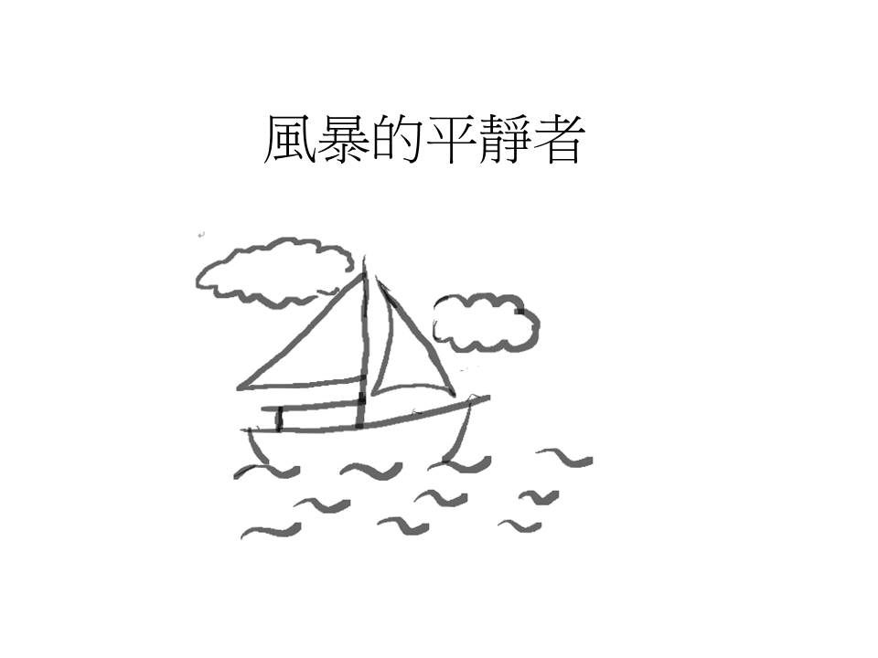
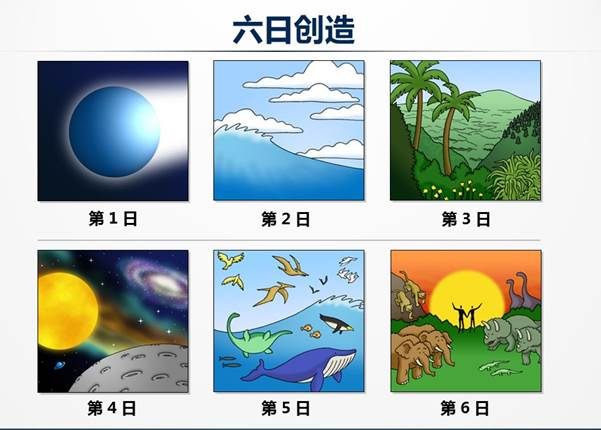
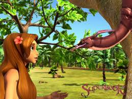
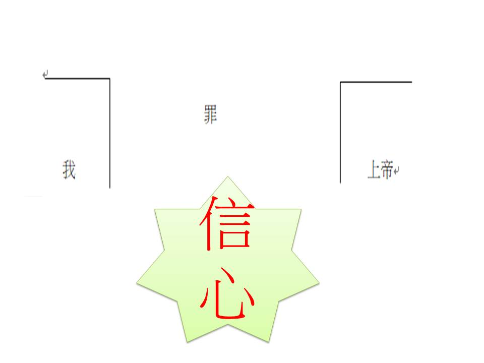
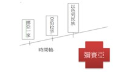

風暴的平靜者

創造宇宙的神
我們知道有一位創造天地的神很愛我們, 從祂六日創造天地的過程中, 我們知道祂所有的創造都是預備環境給人適合居住, 甚至這些動物都是帶到亞當面前, 讓他來命名. 神也知道亞當的需要, 知道他一個人獨居不好, 所以用了他的肋骨造了一個女人與他作伴. 神要與人分享祂的創造和祂對人的愛.

分別善惡樹
在神的創造中有一顆分別善惡的樹, 神曾嚴嚴的對亞當說, 園中的一切的果子他都可以吃, 唯獨那顆分別善惡的樹不能吃, 因為吃的日子就會死.

人聽得見神的聲音, 但也聽得見魔鬼的聲音. 人沒有辦法了解吃了之後會發生甚麼事, 因為他們對死是沒有概念， 但他喜歡撒旦說吃了之後會變得跟神一樣有智慧, 於是他們選擇不相信神, 而受了撒但的誘惑吃了那分別為善的樹.
人就因為不信、悖逆的罪與神隔離了.

神對人的救贖卻從來沒有中斷過, 祂不斷在歷史的時間軸裡告訴我們獲得救贖的方法, 在挪亞時期, 神說洪水要毀滅世界, 唯獨進方舟的人可以得救, 但人因為沒有看到洪水來臨, 甚至沒有看到下雨, 以致不相信神的話, 至終只有挪亞一家得救. 在新的世代中, 人們依然敗壞, 因此神揀選了亞伯拉罕和他的後裔以色列百姓. 在以色列的歷史中, 神告訴他們若聽從神的話就蒙福, 可以在所賜的迦南地安居樂業、國富民強. 倘若背叛神去隨從當地的外邦人拜偶像, 就會滅國, 分散到各地. 但因為百姓沒有看見結果, 不相信會有亡國的命運, 於是藐視先知的話語, 最終亡於亞述和巴比倫. 神在時間軸裡不斷賜下救贖的方法, 百般告知百姓蒙福的道路, 但是沒有人相信神的話. 然而, 在這個過程中, 人們對彌賽亞的期待也越來越相信, 相信神應許彌賽亞的來到. 因此, 在讓我們看約翰福音第一章, 跟隨耶穌的門徒知不知道耶穌是誰?

約翰福音 第一章
35 再次日，約翰同兩個門徒站在那裡。
36 他見耶穌行走，就說：看哪！這是神的羔羊！
37 兩個門徒聽見他的話，就跟從了耶穌。
38 耶穌轉過身來，看見他們跟著，就問他們說：你們要什麼？他們說：拉比，在哪裡住？（拉比翻出來就是夫子。）
39 耶穌說：你們來看。他們就去看他在哪裡住，這一天便與他同住；那時約有申正了。
40 聽見約翰的話跟從耶穌的那兩個人，一個是西門彼得的兄弟安得烈。
41 他先找著自己的哥哥西門，對他說：我們遇見彌賽亞了。（彌賽亞翻出來就是基督。）
門徒知不知道他們跟從誰?
第一課: 這到底是誰? 風暴的平靜者
馬可福音 4:35-41
35. 當那天晚上，耶穌對門徒說：『我們渡到那邊去罷。』
36. 門徒離開眾人，耶穌仍在船上，他們就把祂一同帶去；也有別的船和祂同行。
37. 忽然起了暴風，波浪打入船內，甚至船要滿了水。
38. 耶穌在船尾上，枕著枕頭睡覺；門徒叫醒了祂，說：『夫子，我們喪命，你不顧麼？』
39. 耶穌醒了；斥責風，向海說：『住了罷，靜了罷。』風就止住，大大的平靜了。
40. 耶穌對他們說：『為甚麼膽怯，你們還沒有信心麼？』
41. 他們就大大的懼怕，彼此說：『這到底是誰？連風和海也聽從祂了。』
經文背景
- 耶穌的12個門徒中, 其中至少有三分之一以上, 在還沒有跟隨耶穌之前, 他們的職業可是專業的『漁夫』. 因此, 漁夫就算在半夜開船, 也是駕輕就熟的事. 這也是為什麼當耶穌要門徒晚上渡船到那邊去的時候, 沒有人有甚麼意見的原因.
- 耶穌是一個木匠的兒子, 自然長大也繼承養父約瑟的職業, 直到三十歲出來傳道.
- 耶穌在這時候大約出來傳道一年半左右, 也是耶穌呼召十二個門徒之後, 而這些門徒跟耶穌在一起, 經歷過耶穌醫治好彼得岳母的病、潔淨長大麻瘋的人和一些來向耶穌求診的病人. 同時, 也看過耶穌趕出污鬼等神蹟.
思想經文
當天晚上發生甚麼事情讓門徒十分有壓力?
當晚忽然起了暴風和大波浪打入船內, 而且船要滿了水, 也就是船可能隨時都會沉, 顯然在當時的環境非常的凶險, 而這暴風因為是突然來的, 也就表示這個遇到的困難是意料之外的, 並且是大過他們所不能承擔的, 所以門徒覺得很有壓力.
他們採取甚麼方法處理這個危機?
他們先運用自己老道的經驗來解決問題, 因為他們裡面至少有四位以上是經驗老道的漁夫, 然而他們竭盡所能、方法用盡, 但危難卻依在, 甚至還攸關性命安危; 因此, 在沒有任何解決方法時, 才迫不得以去叫耶穌, 或許原先是為了尊重耶穌是夫子, 但真的沒辦法了, 也管不了太多了, 反正多叫一個人起來幫忙就多一個機會, 至少還可以幫忙舀水, 可見他們的壓力真的很大.
依你之見, 這個方法恰當嗎？
如果我不認識耶穌, 或許我也不覺得找祂有用, 一個水性的門外漢木匠, 在這麼危急的情況能幫甚麼忙呢? 就像我們不會生病的時候去找廚師幫忙的道理是一樣的, 但因為對耶穌的認識, 就覺得他們因為至少還有機會找耶穌, 就還有機會解決他們所面臨的困境!
耶穌處理暴風的方法是甚麼?
耶穌處理風暴的方法就是用祂口裡的話來斥責風和浪 『停了吧! 靜了吧!』
您覺得若您在船上看到這種情況, 聽到耶穌的說法, 您會有甚麼反應？
除非風或浪真的有停或止住了, 否則耶穌會被人認定是個瘋子, 就像我如果跑到壅塞的馬路中間叫所有車子都停下來, 你想會發生甚麼事? 但如果是警察呢? 耶穌就是有那個能力和權柄, 所以才會馬上反應出祂本來就擁有的能力, 去命令風和浪都聽祂的指令. 因此,倘若我在船上聽見耶穌這樣說, 又看見大自然按耶穌所吩咐的, 真的都停了, 就會像彼得說的, 這個人到底是誰? 居然連風和浪都聽祂的, 祂似乎有勝過大自然的能力, 非要來認識祂不可.
從最後門徒的反應來看, 原先他們以為耶穌是誰？
我們知道這時候是耶穌出來傳道約一年多了, 他們已經經歷過耶穌醫治彼得的岳母, 痲瘋病和癱子並且還有趕鬼等等神蹟, 因此他們對於耶穌的認識應該還停留在祂是一位夫子, 一個有學問, 有道德, 也有一點能力的人吧! 總之還是一個普通人.
這樣事件讓門徒對耶穌的認識有甚麼突破？
如今, 連風和海都聽從祂, 可見祂對大自然有掌控權.
等到耶穌處理完整個事件, 祂對門徒說了甚麼？為什麼膽怯, 你們還沒有信心嗎?
其實在一般人的認知中, 應該會認為門徒信心的大小在一般的經驗裡, 應該是建立於對認識耶穌有多少吧, 或許之前他們知道耶穌會醫病、趕鬼, 但對於耶穌能超越大自然的力量是一點都不清楚的, 所以自然沒有辦法對耶穌產生相對的信心, 因此耶穌這樣責備他們合理嗎?
你認為祂為什麼會這樣說？
門徒倒底知不知道他們跟從的是誰呢? 當初亞當夏娃雖沒有看過神創造天地, 但是卻不願意用信心相信神的話, 神在人類的時間軸中, 不斷的賜下救恩的記號, 但有多少人相信神的話呢? 以致神的拯救都是餘民. 如今, 門徒跟從了耶穌, 是因為他們相信施洗約翰的話, 相信耶穌是彌賽亞而跟從祂, 既然跟從了, 是否就應該全心的信任, 不是認識耶穌多少才信任多少吧. 其實耶穌能陪伴這群門徒多久呢？耶穌知道祂的肉體在這個世界的時間是有限的, 如果不能教會門徒用信心先來倚靠祂, 那當耶穌不在他們中間時, 他們要用怎樣的信心去倚靠耶穌呢? 怎麼相信即使肉眼看不見耶穌, 也相信耶穌在他們的船上呢？
何況我們這時代的基督徒, 大部分的人連肉體的耶穌也沒有見過, 如果我們向神禱告, 不願先用信心來相信真的有那麼一位神會聽我們的禱告, 我們怎能願意讓耶穌掌管我們的生命, 相信祂不管在任何時間、任何地點都會聽祂眾兒女的禱告, 並賜下幫助呢? 而且我們要面臨的困難都不一樣, 不一定每一次的有前車之鑑的經驗來幫助我們對神有信心, 所以耶穌在這裡責備他們是要告訴他們, 既然願意認耶穌為主, 就得先用信心相信祂, 將會看見耶穌如何在困境如同今天的暴風雨一樣, 為我們止住眼前的風和浪.
讀完這段聖經, 想想看自己對耶穌的認識是甚麼? 如果那天您在船上, 您會向耶穌求助嗎?
即便當時的門徒可能是不知耶穌連風和浪都能平靜, 但我們知道, 因為聖經有寫, 所以我會直接拉著耶穌, 祂安全我鐵定安全的. 我們的才能雖好, 就如那些門徒是身經百戰的漁夫, 但一山還有一山高. 唯有耶穌超過一切的一切, 因為萬有都是藉祂造的, 所以在我們生命發生的任何狀況下, 雖然我們或許可以尋求其他的外援, 但最好還是把耶穌拉進我們的生命中, 才是上上策.
如果會, 您求助的動機是甚麼?
我的動機是因為祂自己說我們可以求祂的! 耶穌希望我們對祂有信心, 相信祂在我們的船上, 我們可以呼求祂的幫助, 但其實神希望我們時時與祂親近而不是只有在風暴的時候才去找祂幫忙, 我們若平時不與主親近, 不多認識耶穌, 我們要將我們信心的根基建立在哪裡呢? 我們怎知祂是如何幫助我們呢? 祂不要我們到走投無路再找祂, 像那群門徒一樣, 直到山窮水盡、窮途末路的時候才來尋求祂的幫助. 其實, 神是很樂意親近我們, 並願意與我們在生活每時每刻同行, 在我們一開始需要幫助的時候, 祂會跟我們說：『孩子！我在這裡, 一起走吧, 如果真的不行, 就讓我背你走過去吧！將所有的決定權和問題都交給神吧, 相信祂作主絕對比我們的決定還好. 』
最近您的生命中有甚麼風暴讓您難過痛苦嗎? 何不提出來, 讓我們把它告訴耶穌, 經歷祂平靜我們生命的風暴!
這樣的耶穌, 在我們生命中, 有何幫助呢? 我們有沒有甚麼要調整的呢？
我們對耶穌的認識, 一開始或許都是聽別人怎麼說, 但當我們接受耶穌的那刻, 耶穌就進到我們的生命中, 也就是與我們在同一條船上, 或許我們一開始都如這些門徒一樣, 認識耶穌只有這樣或是只是客觀的知識認識, 但藉著我們在困難中, 經歷神的恩典, 生命就擴張, 使我們經歷耶穌就有更深的一步主觀的認識. 我相信當下次遇到同樣問題時, 如果他們有記取這次的經歷, 就不會等船滿了水, 才請求耶穌幫忙. 我們若願意親近神, 祂就會親近我們, 我們就會越來越認識耶穌, 也知道我們信心的根基在哪裡, 我們就會在風暴中, 不是看到大風大浪, 而是看到與我們在同一條船上的耶穌, 使我們可以毫無懼怕的抓住祂, 使我們的心中可以在風暴中, 依然平靜安穩, 有真正的平安. 同時我們也會調整自己, 不會自己在風暴中, 自己在那裏忙到不可收拾時, 才來找耶穌幫忙, 反而會一開始就尋求耶穌的幫忙, 因為知道, 祂必與我們同在. 我們與耶穌的生命, 就像沙灘的腳印